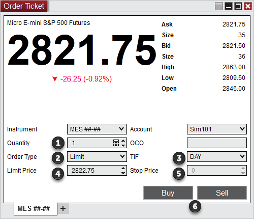
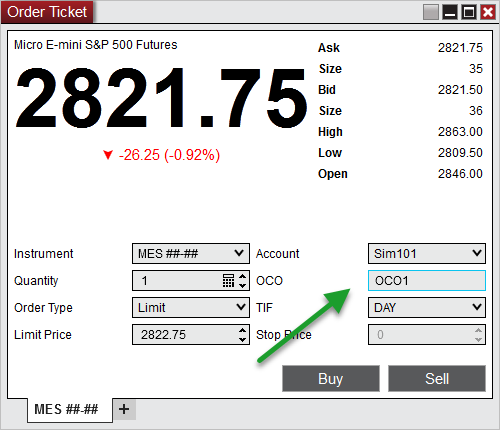

|
<< Click to Display Table of Contents >> Submitting Orders |


|
Submitting Orders
|
<< Click to Display Table of Contents >> Submitting Orders |
|
The Order Ticket window is used to quickly define and submit custom orders. This interface does not display any type of position or trade management features. For those purposes, you would want to consider one of the other order management features: Basic Entry, Chart Trader, FX Pro, FX Board, or SuperDOM.
 Selecting instruments and account
Selecting instruments and account
How to Select an InstrumentThere are multiple ways to select an Instrument in the Order Ticket window.
•Select the Instrument Selector to open a list of recently used instruments or instruments contained in a predefined list
•With the Order Ticket window selected begin typing the instrument symbol directly on the keyboard. Typing will trigger the Overlay Instrument Selector.
For more Information on instrument selection and management please see Instruments section of the Help Guide. How to Select an AccountA list of all connected accounts will be listed in the Account Selector. To change the account select the account you wish to trade through via this drop down list. |
To Submit an Order1. Set the order Quantity field (info) 2. Select the order Type 3. Set the TIF (Time in Force) field (info) 4. Set the Limit price if applicable 5. Set the Stop price if applicable 6. Left mouse click either the BUY or SELL button

Tips 1. You can quickly retrieve the current last, bid, or ask price in the Limit and Stop price fields using the following commands:•Middle click in the field to retrieve the last traded price, •CTRL + middle click in the filed to retrieve the best ask price •ALT + middle click in the field to retrieve the best bid price 2. Hold down the CTRL key when increasing/decreasing limit/stop prices to change the price in steps of 10 tick increments.
Close Tab on Order SubmissionThe Order Ticket window can optionally be configured to automatically close the current tab or window after the order has been submitted. This was designed to help discard unwanted Order Ticket displays when trading multiple instruments.
To enable this functionality:
1.Right click on the Order Ticket tab or window 2.Select Properties... 3.Check Close tab on order submission 4.Press OK |
 Understanding the OCO (One Cancel Other) function
Understanding the OCO (One Cancel Other) function
OCO Orders (One Cancels Other)The Order Ticket window allows you to specify a custom user defined OCO ID using any combination of numbers and letters in the OCO field.
The image below shows the Order Ticket window configured a pending order in which we've input an OCO ID of "OCO1".

In the example above, any additional orders placed with the OCO ID set to "OCO1" will be tied together in an order group as long as these orders are active. If one order in the group is either filled, cancelled or rejected, all orders in the group with the same OCO id will be cancelled.
|